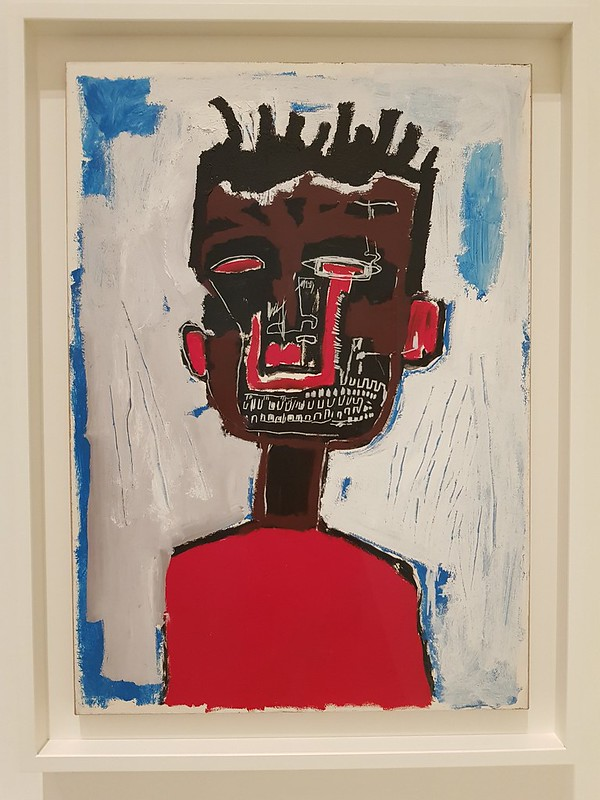
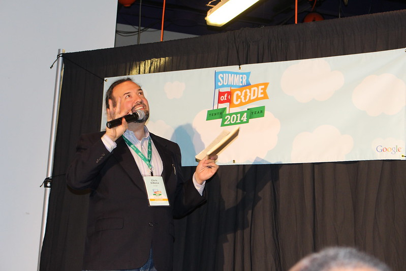

ART
Artists
Salvador Dali
Frida Kahlo
Jean-Michel Basquiat
I wanted to be a star, not a gallery mascot.
Image by @shogunangel at https://www.flickr.com/photos/10907058@N05/44030148550
ENGINEERING
Engineers
Tim Berners-Lee
Hakon Wium Lie
Linus Torvalds
All operating systems sucks, but Linux just sucks less.
DESIGN
Designers
Susan Kare
David Carson
Neville Brody
Some people hate lime-green; red has all this emotional baggage. Blue seems to be overall one of the most positive colors, and a little more serious than yellow.
Image by @Mario Behling at https://www.flickr.com/photos/66728454@N00/15619787911
TYPOGRAPHY
Typographers
Matthew Carter
Jan Tschichold
White space is to be regarded as an active element, not a passive background.